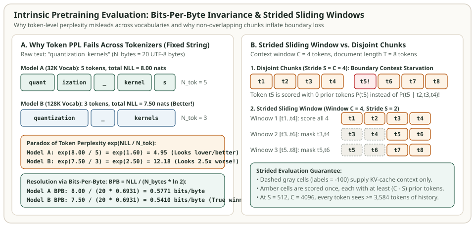

Pretraining Evaluation: Perplexity, Bits-Per-Byte (BPB), WikiText-103, C4, The Pile, FineWeb & Paloma
During the first several hundred billion tokens of LLM pretraining—or whenever you train a $100\text{M}\text{–}1\text{B}$ parameter proxy model to ablate a data mixture, optimizer schedule, or attention variant—downstream multiple-choice benchmarks like 5-shot MMLU sit flat near the $25\%$ random-guessing baseline. To steer pretraining decisions reliably across scales and tokenizers, you need intrinsic language modeling evaluation across curated validation corpora.
Yet intrinsic evaluation is full of subtle measurement traps. Comparing raw token-level perplexity across two models with different BPE vocabulary sizes ($32\text{K}$ vs. $128\text{K}$) systematically declares the larger-vocabulary model worse even when it assigns higher probability to the exact same text. Similarly, evaluating long documents in non-overlapping context chunks artificially inflates loss at every chunk boundary. This chapter derives the exact equations for Bits-Per-Byte (BPB), word-normalized perplexity, and strided sliding-window evaluation, and surveys the canonical pretraining benchmarks: WikiText-103, Penn Treebank, LAMBADA, C4, The Pile, Paloma, and FineWeb-Edu.
The Tokenizer Paradox: Why Bits-Per-Byte (BPB) Replaces Token Perplexity
Let $\mathcal{D}$ be a raw evaluation text consisting of $N_{\text{bytes}}$ UTF-8 bytes (and $N_{\text{words}}$ whitespace-delimited words). A tokenizer $T$ segments $\mathcal{D}$ into a sequence of $N_{\text{tok}}$ subword tokens $(u_1, u_2, \dots, u_{N_{\text{tok}}})$. By the chain rule of probability, an autoregressive language model $P_\theta$ assigns total negative log-likelihood (NLL, measured in natural log units, or nats) to the entire text:
Standard token-level perplexity divides this total NLL by the number of subword tokens $N_{\text{tok}}$ and exponentiates:
Why is $\operatorname{PPL}_{\text{tok}}$ broken whenever two models use different tokenizers? Notice where $N_{\text{tok}}$ sits: in the denominator of the exponent! Suppose Model A uses a $32\text{K}$-vocabulary BPE tokenizer (like Llama-2) that splits the 20-byte string "quantization_kernels" into $N_{\text{tok}}^{(A)} = 5$ tokens with total loss $\mathcal{L}_{\text{nats}}^{(A)} = 8.00\text{ nats}$. Model B uses a $128\text{K}$-vocabulary tokenizer (like Llama-3) that splits the exact same 20-byte string into $N_{\text{tok}}^{(B)} = 3$ tokens and achieves a strictly better total log-likelihood of $\mathcal{L}_{\text{nats}}^{(B)} = 7.50\text{ nats}$:
Even though Model B assigns $e^{8.00 - 7.50} = e^{0.50} \approx 1.65\times$ higher probability to the exact same text string, its per-token perplexity looks $2.46\times$ worse simply because each token in a $128\text{K}$ vocabulary predicts a longer span of characters! To compare models fairly, we must normalize the total document NLL $\mathcal{L}_{\text{nats}}(\mathcal{D}; \theta)$ by a tokenizer-invariant denominator—either the UTF-8 byte count $N_{\text{bytes}}$ (yielding Bits-Per-Byte, BPB) or the canonical word count $N_{\text{words}}$ (yielding word-level perplexity):
On our 20-byte example, Model A achieves $\operatorname{BPB}^{(A)} = \frac{8.00}{20 \ln 2} = 0.5771\text{ bits/byte}$ while Model B achieves $\operatorname{BPB}^{(B)} = \frac{7.50}{20 \ln 2} = 0.5410\text{ bits/byte}$, correctly identifying Model B as the superior compressor.


Strided Sliding-Window Evaluation on Long Documents
Validation corpora like WikiText-103 (articles averaging $3{,}600$ tokens) or books in PG-19 and Paloma are much longer than a fixed evaluation context window $C$ (or we want to evaluate a model trained at $C = 2{,}048$ on a $100{,}000$-token sequence). How should we slice a document $(u_1, \dots, u_T)$ of length $T \gg C$?
- Naive disjoint chunking (stride $S = C$): Splits the document into non-overlapping blocks $[1..C], [C+1..2C], \dots$. Look at the first token $u_{C+1}$ of the second block: even though $u_{C+1}$ sits in the middle of a paragraph, it sees zero prior context ($P_\theta(u_{C+1})$), and $u_{C+2}$ sees only $1$ token of context! This "boundary context starvation" artificially inflates validation NLL.
- Strided sliding window ($1 \le S < C$): Advances the window of width $C$ by a step of $S$ tokens on each pass. On pass $m \ge 1$ covering token indices $[a_m, b_m]$, the first $C - S$ tokens have already been scored in pass $m - 1$; we set their loss target labels to `-100` (masked in PyTorch `CrossEntropyLoss`) so they serve purely as conditioning context in the KV cache, and accumulate NLL only on the last $S$ newly covered tokens:
Under this formula, every single token $u_t$ in the entire document is scored exactly once, and every token after $t = C$ is guaranteed at least $C - S$ tokens of left context (in the limit $S = 1$, every token $t > C$ receives the full $C - 1$ context window, at the cost of $O(T)$ forward passes; in practice $S = 512$ with $C = 4{,}096$ achieves within $0.002\text{ BPB}$ of $S=1$ at $512\times$ higher throughput).
Canonical Pretraining Evaluation Datasets
| Dataset | Origin & Scale | Standard Metric | What It Measures & Key Caveat |
|---|---|---|---|
| Penn Treebank (PTB) | Mikolov et al. / WSJ articles (~82K test words, 10K closed vocab) | Word-level PPL | Historical benchmark; heavy preprocessing replaces rare words with <unk>, making open-vocab comparison tricky. |
| WikiText-2 & WikiText-103 | Merity et al. (2016) — Verified Good/Featured Wikipedia articles (245K test tokens) | Word-level PPL / BPB (strided $S=512$) | Preserves original case, punctuation, and numbers; tests long-range entity repetition across full Wikipedia articles. |
| LAMBADA | Paperno et al. (2016) — 5,153 narrative passages from BookCorpus (~4.6 sentences) | Final-word Exact Match & Target PPL | Human annotators can guess the final word from the full passage but not from the final sentence alone. |
| C4 Validation | Raffel et al. (2020) — Colossal Cleaned Common Crawl held-out split | Validation NLL / BPB | Tracks general English web-text fit; insensitive to code, math, or multilingual regressions. |
| The Pile Validation | Gao et al. (2020) — 22 diverse sub-corpora (ArXiv, GitHub, StackExchange, PubMed, Law) | Per-component BPB | Exposes domain trade-offs when changing data weights (e.g., upsampling code improves GitHub BPB vs prose). |
| Paloma | Magnusson et al. (2024, AI2) — 585 fine-grained domains across 18 macro sources | Macro-averaged & per-domain BPB | Decontaminated, stratified benchmark designed specifically to compare pretraining corpora (Dolma, RedPajama, Falcon, FineWeb). |
| FineWeb & FineWeb-Edu | Penedo et al. (2024, Hugging Face) — 15T tokens + 1.3T educational-filtered subset | Downstream early-signal suite + BPB | Demonstrated that classifier-filtered educational web text dramatically accelerates MMLU/ARC scaling per token. |
Special Case: Multi-Subword Target Scoring in LAMBADA
Unlike WikiText-103 (which scores every token in the article), LAMBADA splits each passage into a context prefix $x$ and a single target final word $w^*$. When a BPE tokenizer splits the target word $w^*$ (say, `" chandelier"`) into $k$ subword tokens $(y_1^*, \dots, y_k^*)$, how must a harness evaluate it?
- Target-Word Perplexity: Sum the conditional log-probabilities across all $k$ subwords of $w^*$, $\ln P_\theta(w^* \mid x) = \sum_{j=1}^k \ln P_\theta(y_j^* \mid x, y_{<j}^*)$, and exponentiate the average per-word negative log-likelihood across the $5{,}153$ passages.
- Greedy Multi-Token Exact Match: Autoregressively argmax-decode $k$ tokens $(\hat{y}_1, \dots, \hat{y}_k)$ starting from $x$ and check whether $\hat{y}_j = y_j^*$ for all $j \in \{1, \dots, k\}$ (or until a whitespace/punctuation boundary is reached). Checking only the first subword $\hat{y}_1 = y_1^*$ would falsely credit partial prefix matches!
Why Paloma's Stratified BPB Predicts Downstream Task Emergence
A critical finding of Magnusson et al. (2024) on Paloma is that while downstream multiple-choice accuracy (like MMLU or ARC) exhibits a noisy "hockey-stick" or threshold effect at small compute scales, domain-specific Bits-Per-Byte follows a smooth log-linear power law with training compute $C$:
By measuring $\operatorname{BPB}_d$ on Paloma's STEM, code, and academic sub-domains at $1\text{B}$ parameters, pretraining teams can reliably forecast which data mixture will win on $70\text{B}$-scale downstream reasoning benchmarks before spending millions of GPU hours.
Runnable Python Verification: BPB, Word PPL & Strided Sliding Window
The self-contained Python script below verifies the tokenizer invariance of Bits-Per-Byte, computes multi-subword LAMBADA exact match and word perplexity, and proves how strided sliding-window evaluation eliminates chunk-boundary context starvation:
import math
def compute_intrinsic_metrics(token_nlls_nats: list[float], raw_text: str) -> dict:
total_nll = sum(token_nlls_nats)
n_tok = len(token_nlls_nats)
n_bytes = len(raw_text.encode("utf-8"))
n_words = len(raw_text.split())
return {
"total_nll_nats": round(total_nll, 4),
"token_ppl": round(math.exp(total_nll / n_tok), 4),
"word_ppl": round(math.exp(total_nll / n_words), 4),
"bpb": round(total_nll / (n_bytes * math.log(2)), 4),
}
text = "quantization kernels accelerate inference" # 41 UTF-8 bytes, 4 words
# Tokenizer A (32K vocab) splits into 8 subwords; Total NLL = 14.0 nats
nlls_32k = [2.1, 1.4, 2.0, 0.9, 2.2, 1.3, 2.5, 1.6]
# Tokenizer B (128K vocab) splits into 4 whole words; Total NLL = 13.2 nats (better model!)
nlls_128k = [3.3, 2.8, 3.4, 3.7]
m_a = compute_intrinsic_metrics(nlls_32k, text)
m_b = compute_intrinsic_metrics(nlls_128k, text)
# Token PPL falsely says A (5.7546) < B (27.1126), while BPB & Word PPL agree B < A!
assert m_a["token_ppl"] < m_b["token_ppl"]
assert m_b["bpb"] < m_a["bpb"] and m_b["word_ppl"] < m_a["word_ppl"]
# Strided Sliding-Window vs Disjoint Chunk NLL Simulation
# Suppose token t's NLL decays with available context length c: nll(c) = 1.0 + 2.0 / (c + 1)
def simulate_window_nll(doc_len: int, window_c: int, stride_s: int) -> float:
total_nll = 0.0
scored = 0
for start in range(0, doc_len, stride_s):
end = min(doc_len, start + window_c)
target_start = start if start == 0 else start + (window_c - stride_s)
for pos in range(target_start, end):
ctx_len = pos - start # number of conditioning tokens in this window
total_nll += 1.0 + 2.0 / (ctx_len + 1)
scored += 1
if end == doc_len:
break
assert scored == doc_len
return round(total_nll / doc_len, 4)
disjoint_nll = simulate_window_nll(doc_len=16, window_c=4, stride_s=4)
strided_nll = simulate_window_nll(doc_len=16, window_c=4, stride_s=2)
oracle_nll = simulate_window_nll(doc_len=16, window_c=4, stride_s=1)
assert disjoint_nll > strided_nll > oracle_nll
print("32K metrics:", m_a)
print("128K metrics:", m_b)
print(f"Avg NLL -> Disjoint(S=4): {disjoint_nll}, Strided(S=2): {strided_nll}, Oracle(S=1): {oracle_nll}")References & Primary Sources
- Merity et al. (2016), Pointer Sentinel Mixture Models — introduces WikiText-2 and WikiText-103.
- Paperno et al. (2016), The LAMBADA Dataset: Word Prediction Requiring a Broad Discourse Context.
- Gao et al. (2020), The Pile: An 800GB Dataset of Diverse Text for Language Modeling — formalizes Bits-Per-Byte (BPB) across 22 evaluation domains.
- Magnusson et al. (2024), Paloma: A Benchmark for Evaluating Language Model Fit — 585-domain stratified BPB benchmark.
- Penedo et al. (2024), The FineWeb Datasets: Decanting the Web for the Finest Text Data at Scale.